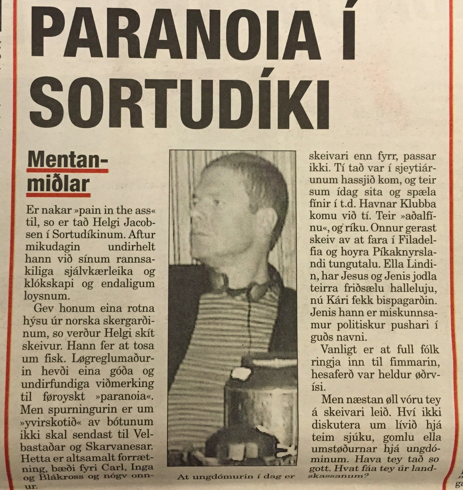
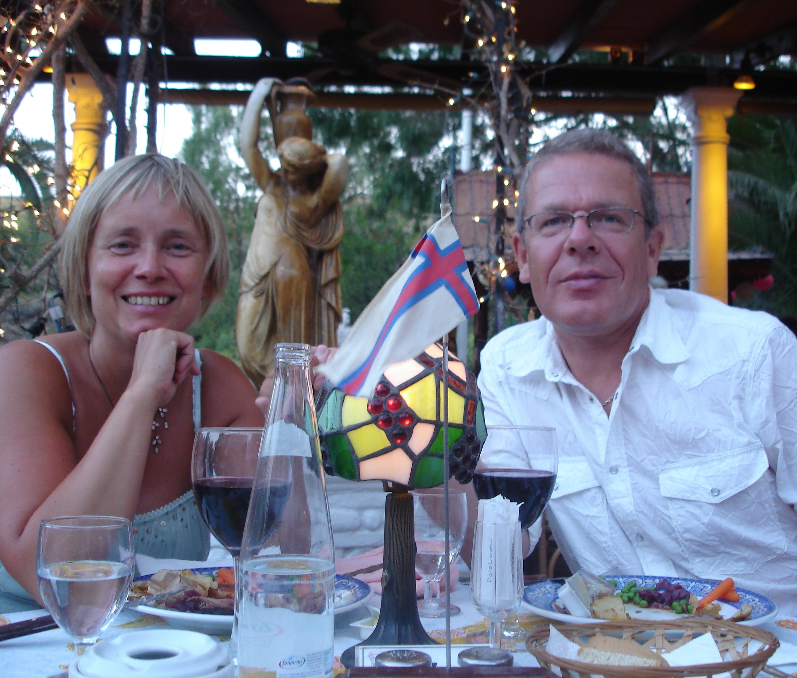
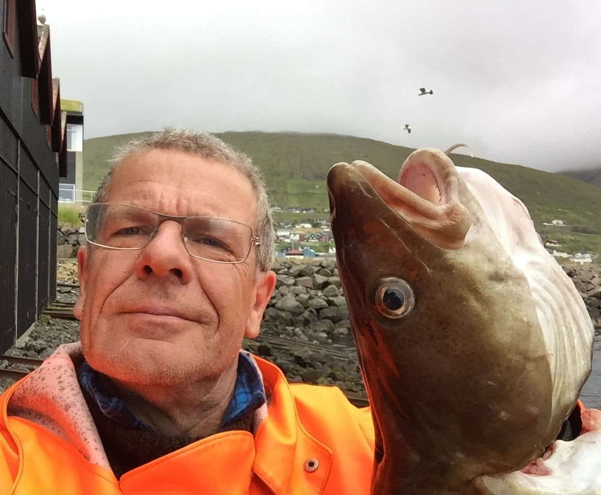

Ein klumma og onnur. Henda kom úr
Oyggatíðindum.

MENTAN-MIÐLAR
>> Er nakar “pain in the ass” til, so er tað Helgi
Jacobsen í Sortudíkinum. Aftur mikudagin
undirhelt hann við sínum rannsakiliga
sjálvkærleika og klókskapi og endaligu
loysnum.
Gev honum eina rotna hýsu úr norska
skergarðinum, so verður Helgi skít skeivur.
Hann fer at tosa um fisk. Løgreglumaðurin
hevði eina góða og undirfundiga viðmerking til
føroyskt “paranoia”. Men spurningurin er um
“yvirskotið” av bótunum ikki skal sendast til
Velbastaðar og Skarvanesar. Hetta er altsamalt
forrætning, bæði fyri Carl, Inga og Blákross og
nógv onnur.
...
Roman Oasis, Manilva. Skriviferia í Spania, 2007

Ein toskur og annar. Hesin er úr Vestmannasundi

Aftur til yvirlit